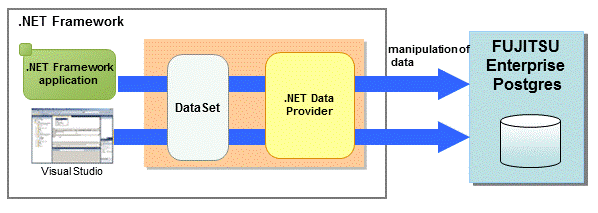

You can link with Microsoft Visual Studio to create application. And, you can automatically generate applications to access database resources by linking to Visual Studio.
Relationship between .NET Framework and FUJITSU Enterprise Postgres
FUJITSU Enterprise Postgres provides .NET Data Provider, which is an interface for ADO.NET of .NET Framework. This enables you to select FUJITSU Enterprise Postgres as the connection destination database of ADO.NET and use the intuitive and efficient application development features of Visual Studio.
